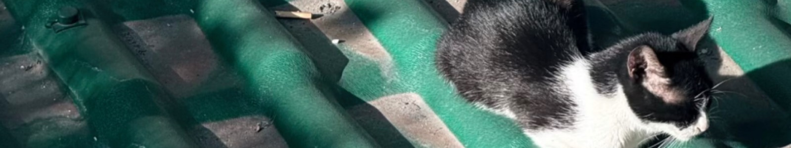

DESTINATIONS · 最近目的地
每一段路，都值得被记住
从最新的旅行开始浏览。照片、日期和当时的心情，都会在下一页等你。
旅行的意义，
不只在于去了多少地方。
有时是一碗异乡的热汤，有时是一条走错的街，有时只是坐在窗边，看一座城市慢慢亮起来。谢谢你来到这里，和我一起翻开这些故事。

在路上 · 拍照 · 写字
从最新的旅行开始浏览。照片、日期和当时的心情，都会在下一页等你。
有时是一碗异乡的热汤，有时是一条走错的街，有时只是坐在窗边，看一座城市慢慢亮起来。谢谢你来到这里，和我一起翻开这些故事。